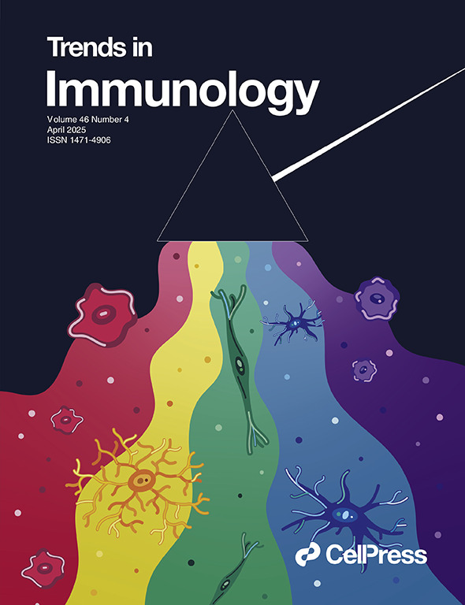
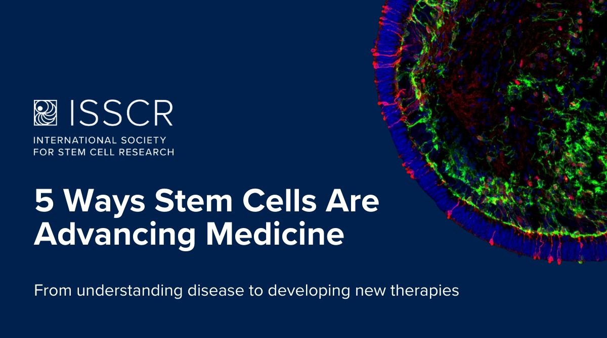
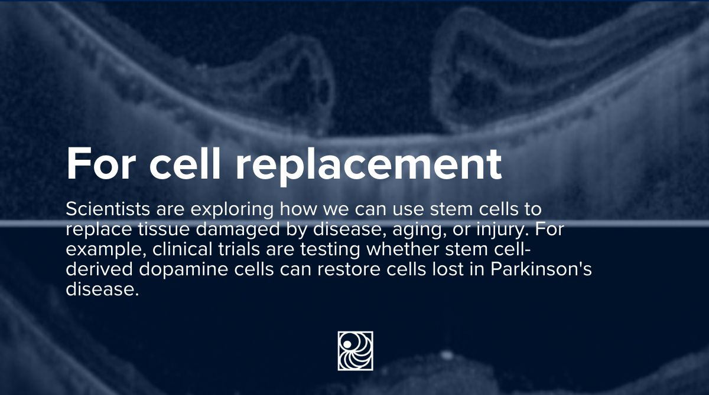
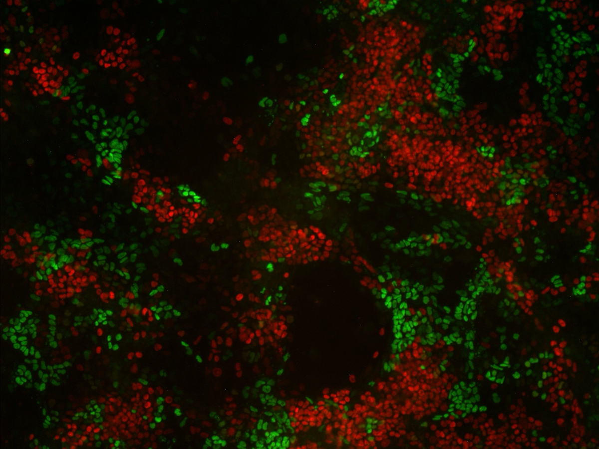
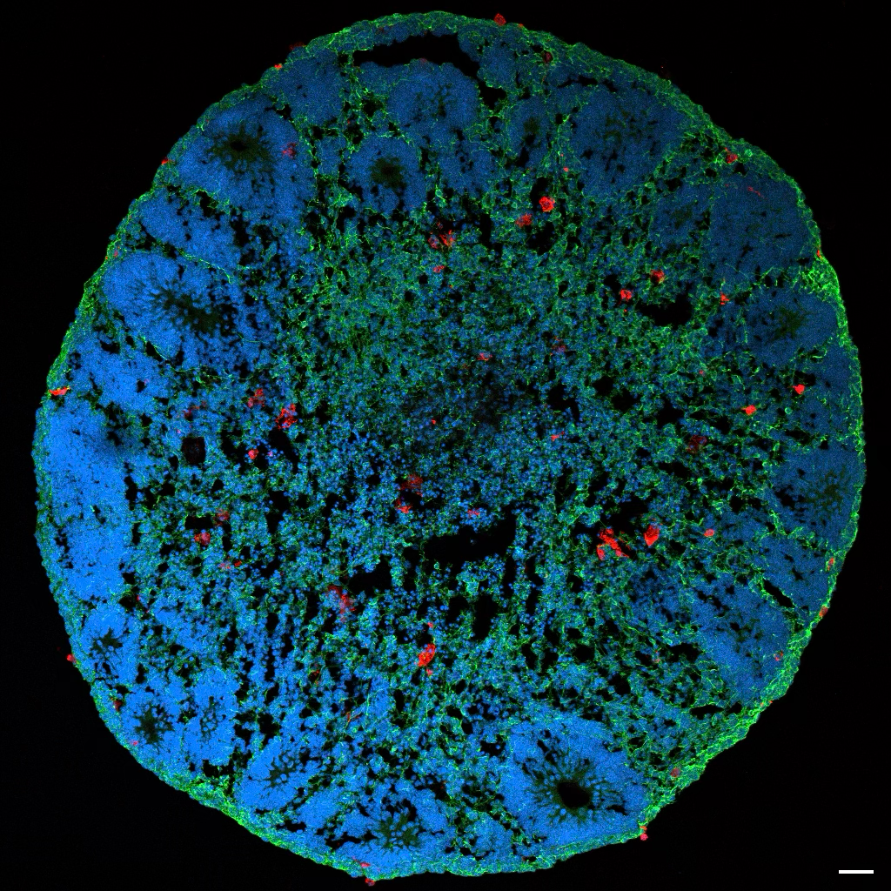
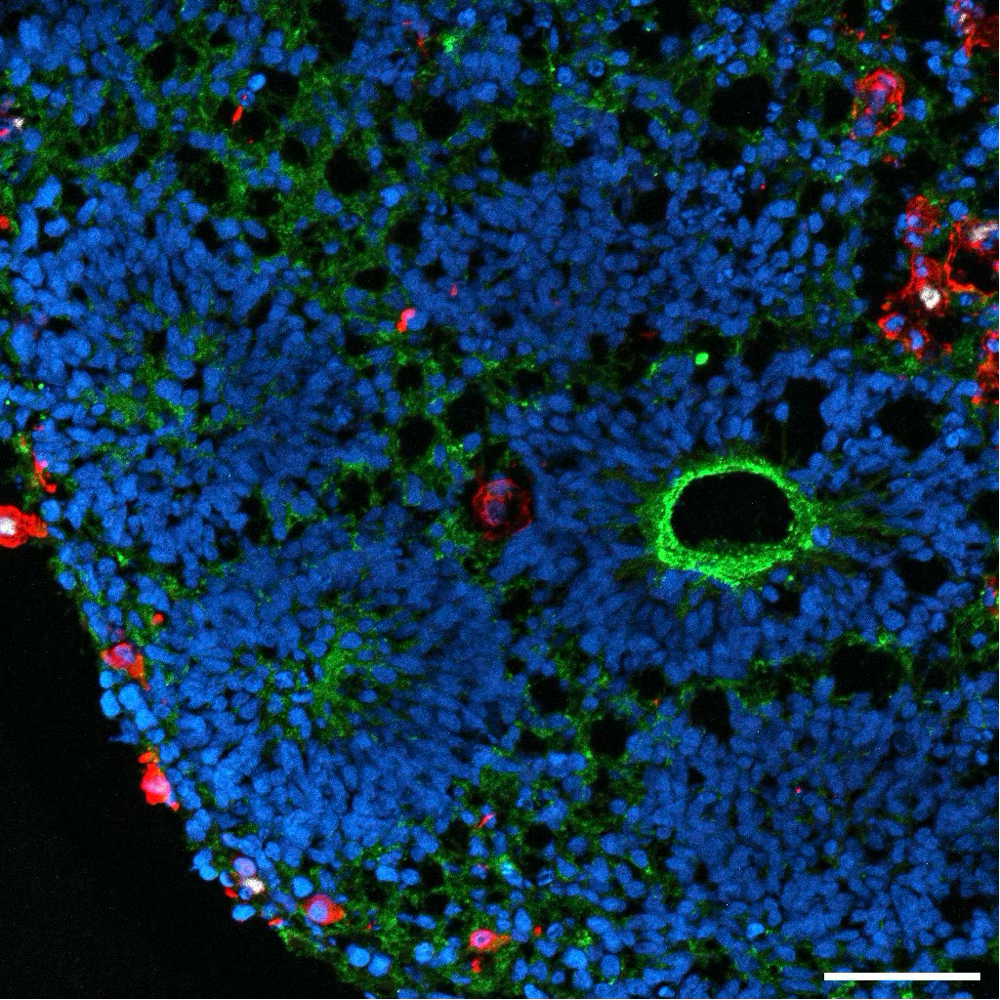
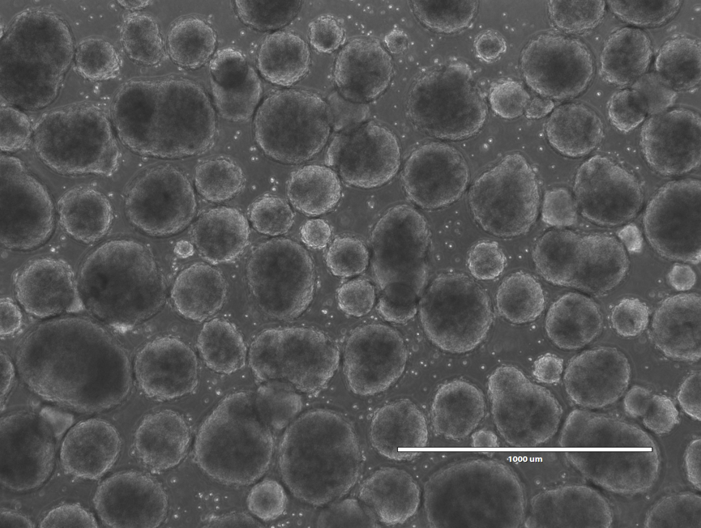

Stem Cell Biologist • Scientific Writer • Educator
Chandrika Rao, PhD
Over a decade of stem cell research, now directed towards scientific writing, editorial work, and science education.
About
I am a stem cell biologist with over 13 years of research experience across three institutions: the University of Cambridge; the University of Edinburgh (PhD, 2019); and the New York Stem Cell Foundation Research Institute, where I most recently held a Staff Scientist position and was awarded the NYSCF-Druckenmiller Postdoctoral Fellowship.
My research focuses on neuroinflammation and Alzheimer’s disease, using human iPSC-based models to study microglial function and disease mechanisms. I have published in journals including Cell Stem Cell, Development, and Trends in Immunology.
Beyond the bench, I bring extensive experience in scientific editorial work, science communication, and mentorship.
Areas of Expertise
Core expertise across stem cell biology, neuroscience, and immunology.
Stem Cell Biology
iPSC and ES cell culture, CRISPR/Cas9 gene editing, neural and glial differentiation, cerebral organoids, and human disease modelling.
Scientific Writing
Peer-reviewed manuscripts, review articles, book chapters, protocols, and accessible lay science communication.
Editorial & Peer Review
Critical manuscript evaluation and editorial judgment across stem cell biology and neuroscience journals, providing structured scientific feedback.
Teaching & Mentorship
Undergraduate and graduate-level biology tutoring, lab skill training, and early-career researcher mentorship.
Writing
Selected peer-reviewed and public-facing science communication.

Image: Giulia Mezzadri
Decoding microglial functions in Alzheimer’s disease: insights from human models
A review exploring how cutting-edge research in human cells and brain tissue is deepening our understanding of the immune system’s role in Alzheimer’s disease.
“Like a prism splitting white light into its colorful spectrum, advanced human models integrated with single-cell technologies are revealing the diverse spectrum of microglial states in health and disease.” — Trends in Immunology, cover caption, April 2025Read article →

5 Ways Stem Cells Are Advancing Medicine
A public-facing carousel for the ISSCR covering five key applications of stem cell research — from disease modelling and drug discovery to personalised medicine, cell replacement, and studying human development and aging.
View post →
Stem Cells and Parkinson’s Disease: From Progress to Possibility
A World Parkinson’s Day post for the ISSCR on the science of dopamine neuron replacement and resources for patients navigating this evolving field.
View post →Research Highlights

The transcription factor E2A drives neural differentiation in pluripotent cells
How does a stem cell “decide” to become a brain cell? In this study, I identified E2A — a protein that controls gene activity — as a key driver of that decision. When E2A is switched on, it activates a programme of neural genes and pushes stem cells towards a brain cell identity; when it’s absent, that process breaks down, revealing E2A as an essential regulator of early brain development.
Read paper →

Generating Neuroimmune Assembloids Using Human iPSC-Derived Cortical Organoids and Microglia
To understand diseases like Alzheimer’s, we need models that reflect the full complexity of the human brain. Brain organoids — miniature 3D structures grown from stem cells — have been a major advance, but they’ve historically left out microglia, the brain’s resident immune cells. In this paper, we describe two methods for integrating microglia into cortical organoids, creating neuroimmune assembloids that better capture brain biology.
Read paper →
Patient iPSC Models Reveal Glia-Intrinsic Phenotypes in Multiple Sclerosis
Using stem cells derived from MS patients, we showed that non-neuronal cells — including astrocytes — carry their own disease-relevant changes, pointing to a more direct role for these cells in MS than previously appreciated.
Read paper →How I Can Help
Available for remote collaborations and consulting engagements.
Manuscript Editing
Scientific accuracy, structure, and clarity review for research articles, review papers, and book chapters — with experience across 200+ biomedical manuscripts, grant reports, and theses.
Peer Review & Assessment
Expert evaluation of manuscripts across stem cell biology, neuroimmunology, and developmental biology. Ad hoc reviewer for journals including Nature, Nature Neuroscience, Communications Biology, and Frontiers in Immunology.
Science Tutoring
Remote one-on-one and small-group sessions in cell biology, molecular biology, and developmental biology. Previous course instructor at the University of Edinburgh for undergraduate and medical students.
Protocol & Technical Writing
SOPs, methods sections, and technical documentation for iPSC handling, organoid generation, CRISPR/Cas9 gene editing, and related laboratory techniques.
Science Communication
Developing educational content that translates stem cell research into accessible formats for scientists, patients, and the public. Currently working with the International Society for Stem Cell Research (ISSCR)’s communications team on social media content covering disease modelling, clinical applications, and patient resources.
Selected Publications
Full list available on Google Scholar.
-
Beyond TREM2 and APOE: human microglial models reveal risk variant biology of PLCG2, INPP5D, CD33, and MS4A in Alzheimer’s diseaseFrontiers in Aging Neuroscience · 2026 Invited Review In preparation
-
iPSC-derived microglia reveal distinct roles for TREM2 and TYROBP/DAP12 in Alzheimer’s diseaseIn preparation
-
Decoding microglial functions in Alzheimer’s disease: insights from human modelsTrends in Immunology 46(4):310–323 · 2025
-
Patient iPSC models reveal glia-intrinsic phenotypes in multiple sclerosisCell Stem Cell 31(11):1701–1713 · 2024 32 citations
-
Pluripotent Stem Cells and ReprogrammingChapter 2 in: Stem Cells, Esculapio · 2024 · ISBN 978-8893851718
-
Generating neuroimmune assembloids using human iPSC-derived cortical organoids and microgliaMethods in Molecular Biology 2951:139–158 · 2024
-
Human Induced Pluripotent Stem Cell (iPSC) Handling Protocols: Maintenance, Expansion, and CryopreservationMethods in Molecular Biology 2454:1–15 · 2021
-
The transcription factor E2A drives neural differentiation in pluripotent cellsDevelopment 147(12):dev184093 · 2020 22 citations
-
Lung epithelial tip progenitors integrate glucocorticoid- and STAT3-mediated signals to control progeny fateDevelopment 143(20):3686–3699 · 2016 57 citations
Get in Touch
Interested in working together or have a question? I’d love to connect.